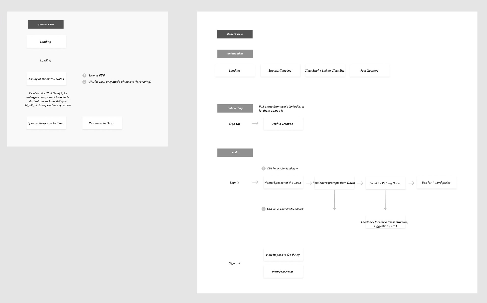
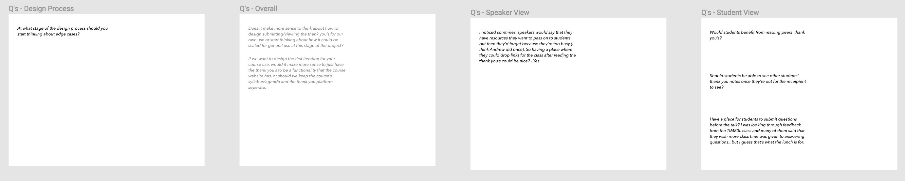
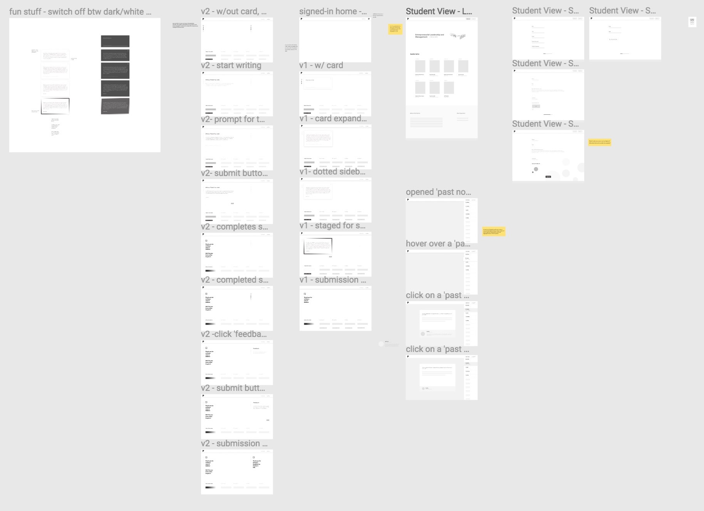
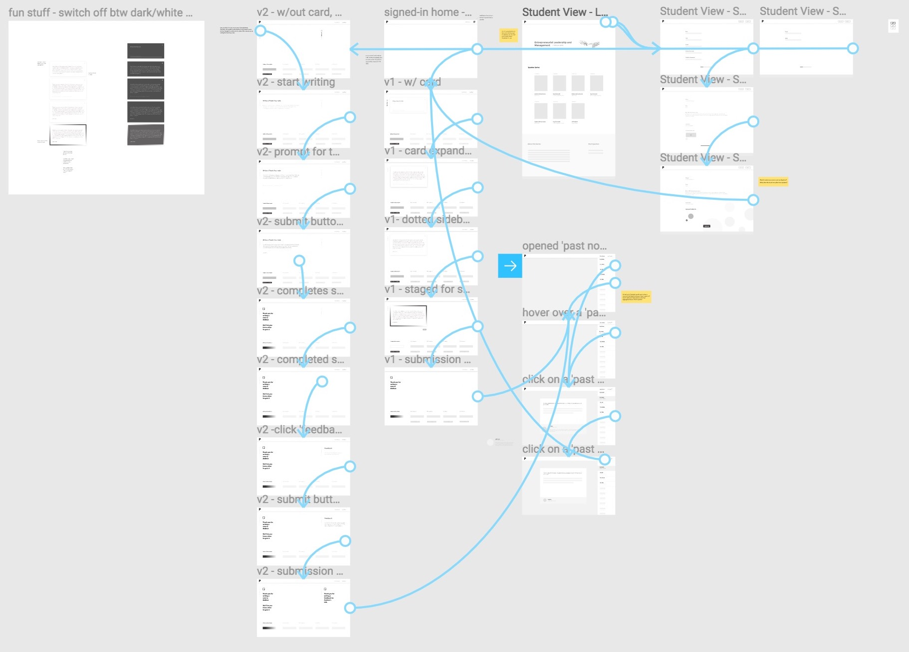

Thank You Platform
Time frame: Late October 2018 - Present
Introduction
This is an ongoing project where we explore to foster little acts of appreciation in an undergraduate classroom in the Tech4Good Lab at UCSC.
Info Architecure of Speaker + Student Views

Q's To Consider

First Batch of Wireframes


Current stage
11/16/2018 (Fri)
2:45PM-3:45PM
Today, we made a pivot in our design direction. Instead of making a ‘thank you’ writing and submission site specifically for David’s future course use, we decided that it would be more interesting to go down the path of designing a platform that enables organizers to quickly create webpages for hosting speaker series — or on a broader spectrum, tackling the question of how we could better facilitate productive conversations around important issues that people care about.
1st iteration - for university setting, specifically faculties in the BOSE who sometimes host seminar series or individual guest speaker talks.
Basic Speaker Series Platform
Landing ー session-specific info, mailing list, location + hours, RSVP
- Thank you notes
- Connecting at/after talks
- Reflection on the talk
To-Do:
- Explore landing pages for different speaker series::
— Revise + expand mocks